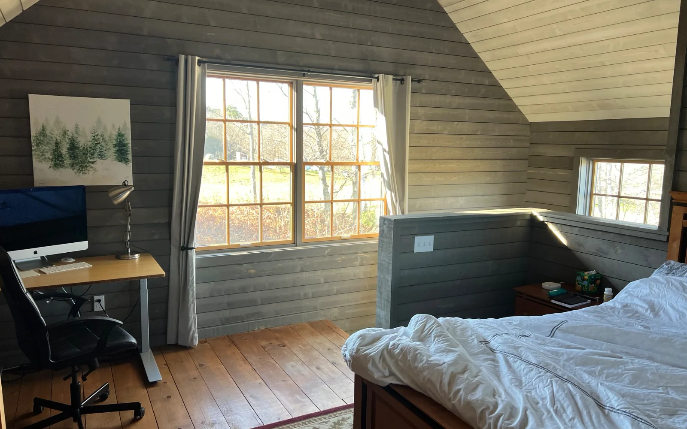
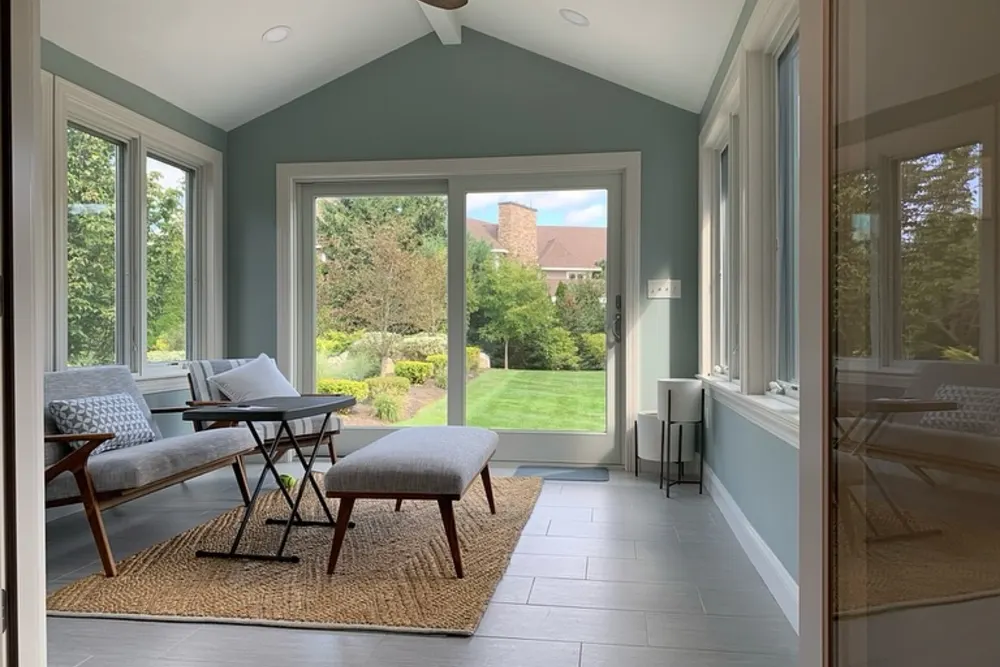

Essex County service area
General Contractor Essex County MA: remodeling, additions, commercial work and decks
DeFaria Construction helps Essex County homeowners and business owners plan remodeling projects with a clear scope, realistic sequencing and workmanship that fits the property.
Our work
Before, during and after: a DeFaria kitchen
The demolition, the build and the finished room, on a real project.
Get a Free Estimate
General contractor
What a general contractor in Essex County, MA takes off your plate
DeFaria Construction is based at 24 Fiske Ave in Lynn and works as the general contractor on kitchens, bathrooms, additions, basements, decks and commercial spaces across Essex County. That means one company plans the scope, prices it in writing, pulls the permits, schedules every trade and is responsible for the result.
On a typical remodel the order of work matters as much as the work itself: demolition, framing, rough plumbing and electrical, inspections, insulation, drywall, tile, cabinets, finish carpentry and paint. When one person runs that sequence, inspections are booked on time, materials arrive before the crew needs them and nothing gets covered up before it is checked.
- Written, itemized estimate after a walkthrough
- Building and trade permits pulled and inspections scheduled
- Licensed trades coordinated on site
- Daily cleanup and a protected work area
- The owner involved from the first visit to the final walkthrough
Where we work
Essex County towns we serve, with a page for each one
From Lynn and the coast to Cape Ann and the Merrimack Valley, these are the Essex County towns where we work most. Each town links to the service pages written for it, with local details, permits and costs.
Lynn, MA
Our home base. Two-family homes and triple-deckers, Victorians near Lynn Shore Drive and Capes and ranches in the Highlands and near Lynn Woods. Pages for Lynn: Lynn kitchen remodeling, Lynn bathroom remodeling, Lynn home additions, Lynn remodeling, Lynn decks, Lynn commercial remodeling.
Swampscott, MA
Victorians and Colonials close to the water, many with original plaster, narrow stairs and older plumbing. Pages for Swampscott: Swampscott bathroom remodeling.
Marblehead, MA
Old Town homes with small rooms and tight lots, inside a historic district where exterior changes go through local review. Pages for Marblehead: Marblehead bathroom remodeling, Marblehead finish carpentry, Marblehead interior painting.
Salem, MA
Federal and Victorian homes in the historic districts, plus two-families and postwar houses across the city. Pages for Salem: Salem kitchen remodeling, Salem bathroom remodeling, Salem home additions, Salem remodeling, Salem decks, Salem commercial remodeling.
Peabody, MA
Postwar Capes, ranches and split levels that often need more space, a second bathroom or an updated kitchen. Pages for Peabody: Peabody kitchen remodeling, Peabody bathroom remodeling, Peabody home additions, Peabody remodeling, Peabody decks, Peabody commercial remodeling.
Beverly, MA
Colonials and Victorians near downtown and Beverly Farms, and mid-century homes in the neighborhoods inland. Pages for Beverly: Beverly kitchen remodeling, Beverly bathroom remodeling, Beverly home additions, Beverly remodeling, Beverly decks, Beverly commercial remodeling.
Danvers, MA
Colonials and Capes from many decades, with additions and kitchen updates among the most common projects. Pages for Danvers: Danvers kitchen remodeling, Danvers bathroom remodeling, Danvers home additions, Danvers remodeling, Danvers decks, Danvers commercial remodeling.
Lynnfield, MA
Larger Colonials and Garrisons on wooded lots, where additions and primary suites are frequent requests. Pages for Lynnfield: Lynnfield kitchen remodeling, Lynnfield bathroom remodeling, Lynnfield home additions, Lynnfield remodeling, Lynnfield decks, Lynnfield commercial remodeling.
Saugus, MA
Capes and ranches in Cliftondale and Lynnhurst, plus businesses along Route 1. Pages for Saugus: Saugus kitchen remodeling, Saugus bathroom remodeling, Saugus home additions, Saugus remodeling, Saugus decks, Saugus commercial remodeling.
Middleton, MA
Newer subdivisions and older farmhouses, often on private septic systems. Pages for Middleton: Middleton kitchen remodeling, Middleton bathroom remodeling, Middleton home additions, Middleton remodeling, Middleton decks, Middleton commercial remodeling.
Topsfield, MA
Colonials and antique homes on large lots, with careful finish work expected inside. Pages for Topsfield: Topsfield bathroom remodeling.
Boxford, MA
Large homes on wooded lots with private wells and septic, which shape where a new bathroom or addition can go. Pages for Boxford: Boxford kitchen remodeling, Boxford bathroom remodeling, Boxford home additions, Boxford remodeling, Boxford decks, Boxford commercial remodeling.
Wenham, MA
Quiet colonial homes where homeowners want upgrades that fit the character of the house. Pages for Wenham: Wenham bathroom remodeling.
Hamilton, MA
Antique homes and Colonials, many with older layouts and original trim worth keeping. Pages for Hamilton: Hamilton kitchen remodeling, Hamilton bathroom remodeling, Hamilton home additions, Hamilton remodeling, Hamilton decks, Hamilton commercial remodeling.
Ipswich, MA
One of the largest collections of First Period houses in the country, plus Capes and newer homes. Pages for Ipswich: Ipswich kitchen remodeling, Ipswich bathroom remodeling, Ipswich home additions, Ipswich remodeling, Ipswich basement finishing, Ipswich decks, Ipswich commercial remodeling.
Rowley, MA
Small town homes along Route 1A and newer houses on larger lots. Pages for Rowley: Rowley bathroom remodeling.
Georgetown, MA
Capes, Colonials and newer homes, with finished basements and kitchens among the common projects. Pages for Georgetown: Georgetown kitchen remodeling, Georgetown bathroom remodeling, Georgetown home additions, Georgetown remodeling, Georgetown basement finishing, Georgetown decks, Georgetown commercial remodeling.
Groveland, MA
Riverside neighborhoods and newer homes in the Merrimack Valley. Pages for Groveland: Groveland kitchen remodeling, Groveland bathroom remodeling, Groveland home additions, Groveland remodeling, Groveland basement finishing, Groveland decks, Groveland commercial remodeling.
Newbury, MA
Byfield, Old Town and Plum Island homes, from antique farmhouses to coastal cottages. Pages for Newbury: Newbury bathroom remodeling.
Newburyport, MA
Federal period homes on High Street and in the South End, many inside the local historic district. Pages for Newburyport: Newburyport bathroom remodeling.
Salisbury, MA
Beach homes and year-round houses where salt air and moisture change the material choices. Pages for Salisbury: Salisbury bathroom remodeling.
Essex, MA
Antique homes and marsh-front properties on Cape Ann. Pages for Essex: Essex kitchen remodeling, Essex bathroom remodeling, Essex home additions, Essex remodeling, Essex basement finishing, Essex decks, Essex commercial remodeling.
Gloucester, MA
Cape Ann working waterfront city with coastal homes exposed to wind and salt. Pages for Gloucester: Gloucester kitchen remodeling, Gloucester bathroom remodeling, Gloucester home additions, Gloucester remodeling, Gloucester basement finishing, Gloucester decks, Gloucester commercial remodeling, Gloucester finish carpentry, Gloucester interior painting.
Manchester-by-the-Sea, MA
Shingle style and coastal homes with high finish expectations. Pages for Manchester-by-the-Sea: Manchester-by-the-Sea bathroom remodeling.
Andover, MA
Colonials and Garrisons in established neighborhoods, with kitchens and additions as frequent projects. Pages for Andover: Andover kitchen remodeling, Andover bathroom remodeling, Andover home additions, Andover remodeling, Andover decks, Andover commercial remodeling.
North Andover, MA
Old Center antique homes and newer Colonials around Lake Cochichewick. Pages for North Andover: North Andover bathroom remodeling.
Project photos
Project photos tied to the four Essex County services
The county hub now shows the actual service mix instead of a text-only list of towns.



Local homes
How Essex County homes change the plan
The age and style of the house decide most of the hidden work. A Cape from the 1950s usually needs more headroom and storage upstairs, which leads to dormers. A Colonial often has a closed kitchen that homeowners want to connect to the dining room. A two-family or triple-decker in Lynn or Salem may have separate utilities for each unit and stairs and egress rules that apply to both floors.
Older homes bring plaster walls, balloon framing without fire blocking, knob and tube wiring in some cases and lead paint in houses built before 1978. None of these stop a project, but each one has to be found during the walkthrough and priced in the estimate so it does not become a surprise in the middle of the job.
- Capes: dormers, second bathrooms and finished attics
- Colonials: kitchen and dining rooms connected, primary suites
- Two-families and triple-deckers: unit by unit remodels, egress and fire separation
- Antique and First Period homes: careful repairs that keep original trim and proportions
Permits
Permits, codes and approvals across Essex County towns
Every town in Essex County has its own building department, and all of them enforce the Massachusetts State Building Code. A kitchen, bathroom, addition or basement project usually needs a building permit plus separate electrical and plumbing permits pulled by licensed trades, with inspections at rough-in and at the end.
Some projects need more than a building permit. Exterior changes in local historic districts, such as parts of Salem, Marblehead and Newburyport, can require review by the local historic commission. Work near wetlands, the marsh or the coast can require approval from the town conservation commission before construction starts. We check these during the first visit so the schedule includes them.
Coastal homes
Remodeling coastal homes from Swampscott to Cape Ann
Homes near the water in Swampscott, Marblehead, Gloucester, Rockport, Manchester-by-the-Sea, Newbury and Salisbury deal with salt air, wind driven rain and, in some places, flood zones. That changes material choices: stainless or coated fasteners outside, decking and trim that tolerate moisture, exhaust fans that actually remove humid air and tile assemblies built to stay dry.
If the property is in a flood zone, the town may have rules about substantial improvements and where mechanical equipment can sit. We review the flood map with you before the design is final.
Wells and septic
Projects on a private well and septic system
In towns like Boxford, Topsfield, Middleton, Hamilton, Wenham and parts of Ipswich and Newbury, many homes use a private well and a septic system. In Massachusetts, septic systems fall under Title 5, and adding a bedroom can require confirming that the septic system is sized for it. A new bathroom or an addition in these towns starts with a look at where the septic and the well are and what the system can handle.
In-law suites
Accessory dwelling units and in-law suites
Massachusetts now allows an accessory dwelling unit of up to 900 square feet by right on most single family lots, under the state law that took effect in February 2025. Towns can still apply reasonable rules on things like setbacks and parking. For many Essex County families that makes an in-law suite over the garage, in the basement or in a small addition a realistic option. We plan the space, the separate entrance, the bathroom and kitchenette and the permits together.
2026 costs
What remodeling costs in Essex County in 2026
These ranges come from our own projects on the North Shore and match the cost guides on this site. The final number depends on the size of the room, what is behind the walls and the finishes you choose.
- Kitchen: about $18,000 to $30,000 for a refresh, $35,000 to $65,000 for a mid-range remodel and $70,000 to $120,000 and up for a full gut
- Bathroom: about $10,000 to $20,000 for a refresh, $20,000 to $45,000 for a full remodel and $45,000 to $80,000 and up for a gut or layout change
- Basement: about $35 to $90 per square foot, roughly $30,000 to $75,000 for a typical 700 to 900 square foot basement
Process
How an Essex County project runs, step by step
Every project follows the same order, and you know each step before it happens.
- Walkthrough: we visit, measure, look at the structure, plumbing and electrical and listen to what you want to change
- Written estimate: an itemized scope with allowances for anything that can only be confirmed once walls are open
- Selections and ordering: cabinets, tile, fixtures and materials chosen and ordered early, because lead times decide the start date
- Permits: building and trade permits pulled with your town
- Construction: demolition, rough work, inspections, then finishes, with updates during the job
- Final walkthrough: punch list completed before the last payment
Reviews
Rated 5.0 on Google by 19 homeowners
Every review on our Google profile comes from a real project, and every one has a reply from us. Homeowners mention clear communication, a clean job site and a finished room that matches the estimate. DeFaria Construction is also a BBB Accredited Business with an A+ rating.
Commercial
Commercial build-outs for Essex County businesses
We also remodel offices, retail stores, salons and restaurants across Essex County, from downtown Salem and Lynn to the plazas along Route 1 in Saugus and Peabody. Commercial work runs on a different clock: the business often stays open, so we plan after-hours or phased work, keep the space safe for customers and coordinate the permits and inspections the town requires before the doors reopen.
A commercial project starts the same way as a home project, with a walkthrough and a written scope, and you have one point of contact for the schedule, the trades and the final punch list.
- Offices, retail, salons and restaurants
- After-hours or phased work to keep the business open
- Permits, inspections and occupancy sign-off coordinated
Experience
Why homeowners work with DeFaria
DeFaria Construction is a local, owner-led company. Luiz DeFaria is involved from the first walkthrough to the final inspection, so the person who prices the job is the same person who answers for it.
If you are planning a project anywhere in Essex County, call (781) 586-8838 or request an estimate online. We will visit, measure and send a written scope you can compare with any other bid.
Request an estimateFAQ
Common questions about hiring a general contractor in Essex County
Does DeFaria Construction work across Essex County?
Yes. DeFaria is based in Lynn and works across Essex County, from Lynn, Swampscott, Salem, Peabody and Beverly to Cape Ann, Newburyport and the Merrimack Valley, and also in Middlesex County.
What kind of projects do you take on in Essex County?
Kitchen and bathroom remodels, home additions and in-law suites, basement finishing, decks and patios, interior remodeling, finish carpentry, painting and commercial build-outs for offices, shops and restaurants.
Do you pull the permits for my town?
Yes. We pull the building permit, coordinate the electrical and plumbing permits with licensed trades and schedule the inspections with your town. If the project needs historic or conservation review, we plan that into the schedule.
How much does a kitchen or bathroom remodel cost in Essex County?
Based on our 2026 projects, a kitchen runs about $18,000 to $30,000 for a refresh and $35,000 to $65,000 for a mid-range remodel. A full bathroom remodel runs about $20,000 to $45,000.
Can I add an in-law suite or ADU in Essex County?
In many cases yes. Massachusetts allows an accessory dwelling unit of up to 900 square feet by right on most single family lots since February 2025, with local rules on setbacks and parking. Homes on septic also need the system checked for the extra bedroom.
How do I get an estimate?
Call (781) 586-8838 or use the estimate form on this page. We schedule a walkthrough, measure and send a written, itemized estimate. The estimate is free.